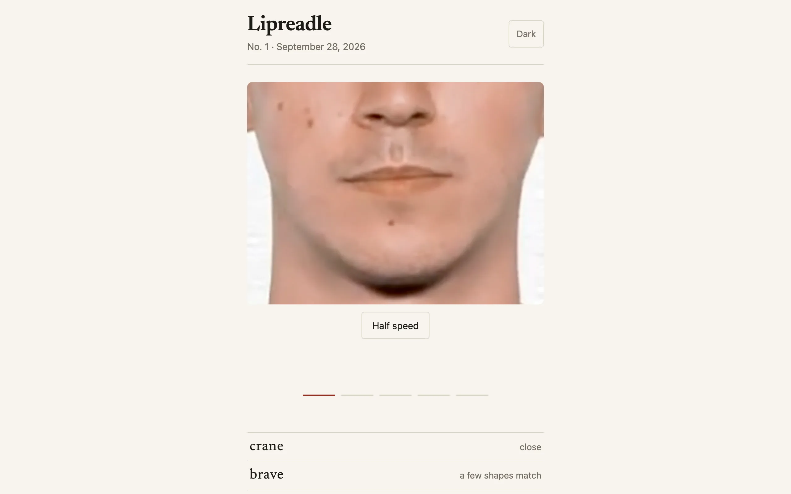

Wordle tells you about letters. Lipreadle shows you a mouth. A short muted clip plays someone saying a five-letter word, and you guess until you get it. There's no cap on guesses, fewer is a better score, and a wrong guess never says anything about spelling. It says how alike the two words look on the lips, from "nothing like it" to "looks the same on the lips". Everyone gets the same word, and it changes at midnight, your midnight.
Visemes
Lipreading is hard because many sounds share a mouth shape. P, B, and M all close the lips. F and V both put the lower lip on the teeth. K, G, and H hardly show at all. A mouth shape is called a viseme, and I collapse the phonemes of the CMU pronouncing dictionary onto 14 of them, one letter each, so a word becomes a short string. Brave is mref, crane is kred, and a run of the same shape collapses to one letter, since a lipreader can't count repeats. Words the dictionary doesn't know fall back to a rough map from spelling.
The verdict on a guess is an edit distance between its viseme string and the answer's. Substituting shapes that are easy to confuse, d for l, s for the pushed-forward c, k for the open a, o for the rounded w, costs half. Similarity is one minus the distance over the longer string. Above 0.6 the guess is "close", above 0.3 "a few shapes match", and identical strings get "looks the same on the lips", which is the game admitting that two words can't be told apart this way. Guesses sort closest first, so the list is a map of where you've been rather than a log.
Where the clips come from
Pronunciation channels on YouTube publish clip after clip titled "How to pronounce X in American English", which is a labeled dataset if you squint. A Python pipeline lists every video on a channel, keeps the ones whose word is five letters, in the guess list, and common enough by word frequency, and downloads them at 720p slowly, with sleeps between requests, a bandwidth cap, and a cooldown that doubles each time a download hits a 429 or a bot check.
Each video has a few takes of the word, and the cut step finds them by audio energy, anything within 30 dB of the peak. Face landmarks then judge each take. Head yaw and pitch have to stay within 14 degrees, the mouth has to open by a minimum range so there's something to read, the mouth region has to be sharp, and the crop can't reach the channel's caption banner. The best take by those measures is cropped from nose to chin, scaled to 480 by 360, and held still for a moment at each end. I approve or reject the results in a browser page, and the publish step uploads the approved clips to R2 and schedules them, shuffled with a fixed seed so the order isn't guessable from the alphabet.
Serving it
One Cloudflare Worker serves the page and three endpoints: today's puzzle number and clip, a guess check, and the day's guess histogram. The answer never reaches the browser. The client sends its local date, the Worker accepts anything within a day of UTC and maps it to a puzzle number from a fixed epoch, and when the scheduled clips run out the schedule repeats from the start. After a solve the clip plays with sound, the day's histogram appears with your bar marked, and the share text is just the puzzle number and your guess count.
Most of the launch-day fixes were Safari. iOS ignored the muted attribute and wouldn't load the clip until play was requested, so the page sets muted from script, calls load explicitly, and shows a "tap to play" label if nothing is moving a second and a half after the source is set. The first puzzle was September 28, 2026.